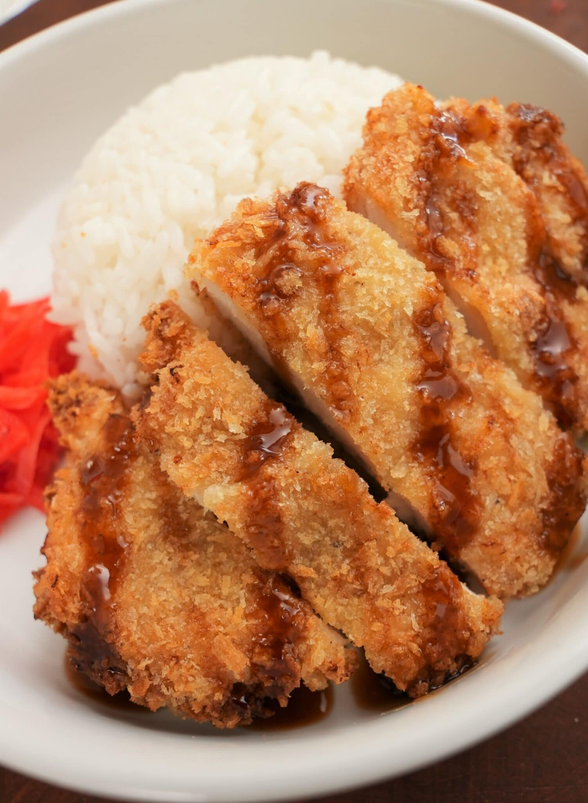

Air Fryer Chicken Katsu

Description:
Crispy on the outside, juicy on the inside – and the best part is that this AIR FRYER CHICKEN KATSU is just as good as the deep-fried version!
Ingredients:
- 4 pieces chicken breast 1/2 lb each, seasoned with salt & pepper to taste
- 1/2 cup flour
- 1/4 cup water as needed to loosen wet batter
- 2 large eggs
- 1/2 tsp kosher salt
- 1/2 tsp pepper
- 1 tsp garlic powder
- 2 cups panko breadcrumbs
- neutral cooking oil spray
Steps:
- Pound chicken breast to 1/2" thick filets and season both sides with salt and pepper. Set aside to dry brine while you prepare the rest of your ingredients.
- In a large wide bowl, mix together eggs, flour, salt, pepper, and garlic powder until the consistency is slightly thinner than pancake batter (add 1 tbsp of water at a time until consistency is achieved).
- In a separate tray, add panko breadcrumbs and set next to the wet batter.
- Dip chicken breast in the egg mixture and let excess drip off. Immediately coat with panko and press the panko breadcrumbs into the filet to stick making sure to leave no dry spots.
- Place into air fryer basket and lightly spray the top with a neutral oil spray (canola or avocado oil). Air fry at 350F for 10 minutes or until golden. Lightly spray the top again, flip, and spray the bottom side and continue cooking at 350F for 4-5 minutes or until the crust is golden and internal temp reads 165F.
- Serve with rice, katsu sauce, pickled ginger and enjoy!